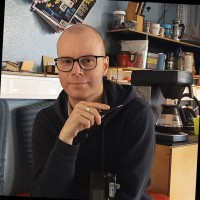
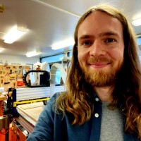
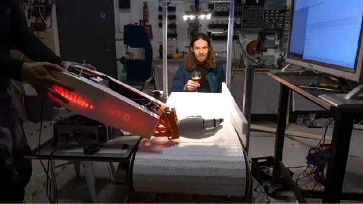
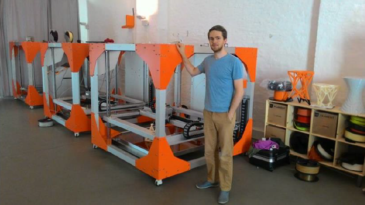
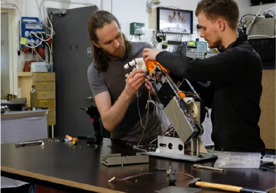

Starfsfólk
Fab Lab Ísafjörður er tveggja manneskna teymi sem leggur áherslu á nýsköpun, sköpun, hönnun, framkvæmd og stuðning við menntakerfið, atvinnulífið, frumkvöðla og samfélagið í gegnum stafræna framleiðslutækni.
Þórarinn Bjartur Breiðfjörð, forstöðumaður smiðjunnar, leiðir starfsemina, ásamt því að styðja notendur við fjölbreytt verkefni.
Svavar Konráðsson er verkefnastjóri og kemur með reynslu sína í vélaverkfræði og frumkvöðlastarfsemi inn í smiðjuna. Hann hefur unnið að mörgum nýsköpunarverkefnum, þar á meðal 3D-prentun og hönnun báta.
Staðsetning, tölvupóstur og símanúmer smiðjunar
| Torfnes 400 Ísafjörður | info hjá fabisa.is | +354 450 4408 |
-
 Þórarinn Bjartur Breiðfjörð - Forstöðumaður
Þórarinn Bjartur Breiðfjörð - Forstöðumaður

Póstfang: doddi hjá fabisa.is
Sérþekking: Rafeindatækni
Uppáhalds forrit: Blender 3D og Inkscape
Þórarinn lauk sveinsprófi í rafeindavirkju 2009 og lauk Fab Akademíuna 2015 og hefur verið virkur leiðbeinandi fyrir nemendur um allt land og líka leiðbeint nemendum utan lands. Hann hefur starfað í smiðjunni síðan 2014. Þórarinn er sérlega góður í bilanagreiningu og er með víðtæka yfirsýn yfir nýsköpunarumhverfið í landinu.


-
 Svavar Konráðsson - Verkefnastjóri
Svavar Konráðsson - Verkefnastjóri

Póstfang: svavar hjá fabisa.is
Sérþekking: Vélaverkfræði
Uppáhalds forrit: FreeCAD og KiCad
Svavar er vélaverkfræðingur og lauk Fab Akademíuni 2023 og stefnir á að verða leiðbeinandi í Fab Akademíuni. hann hefur starfað í smiðjuni síðan 2021. Svavar hefur góða þekkingu á CAD hönnun.
Hann er einn sá aðili sem kom team spark á stað 2012 og stofnaði 3D-prentun 2015.


